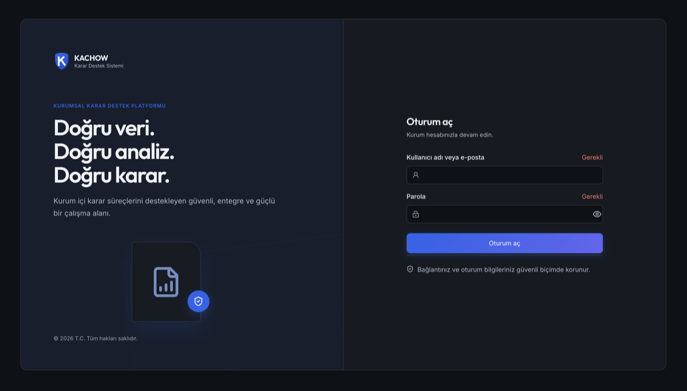
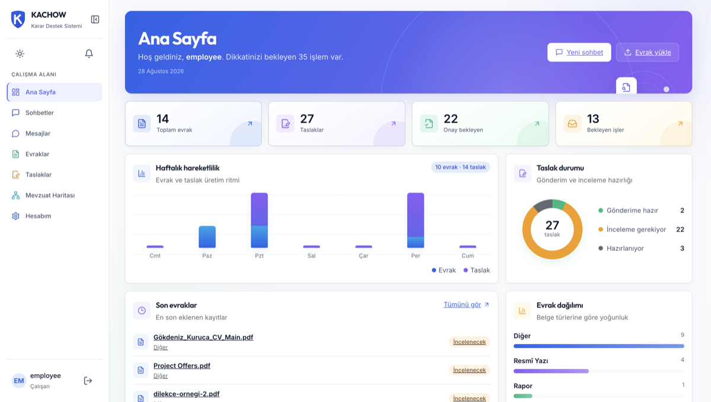
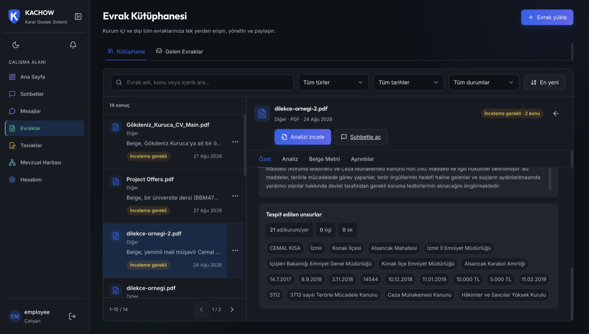
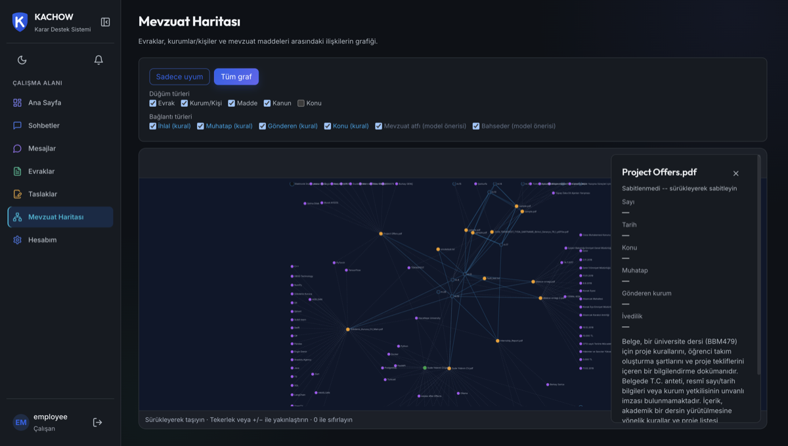
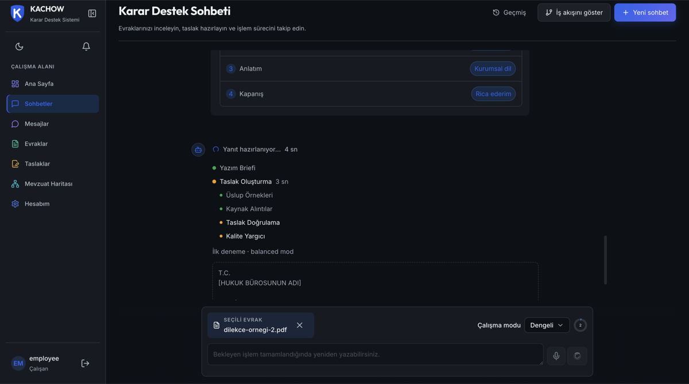
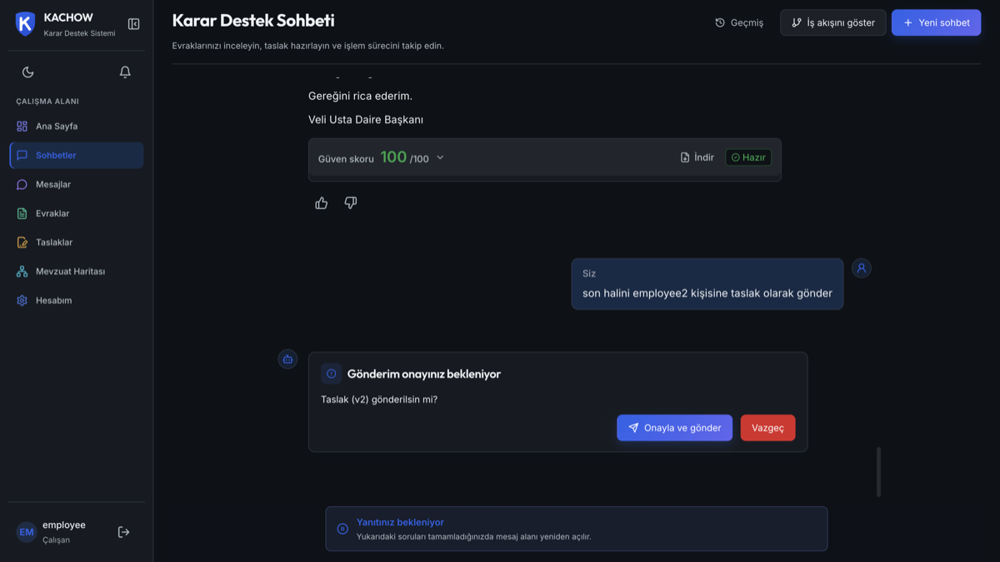
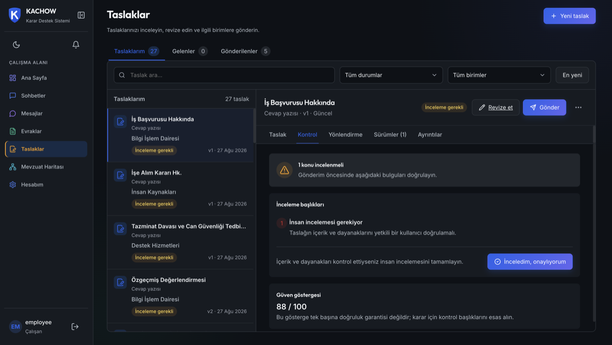
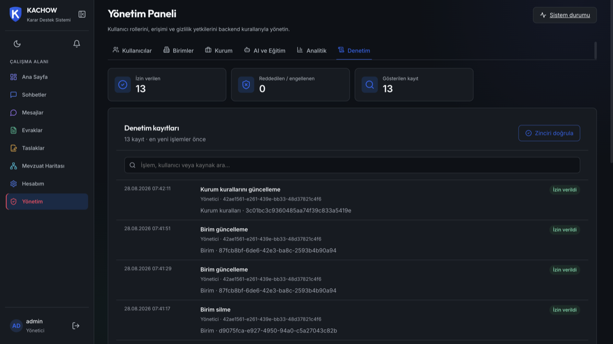
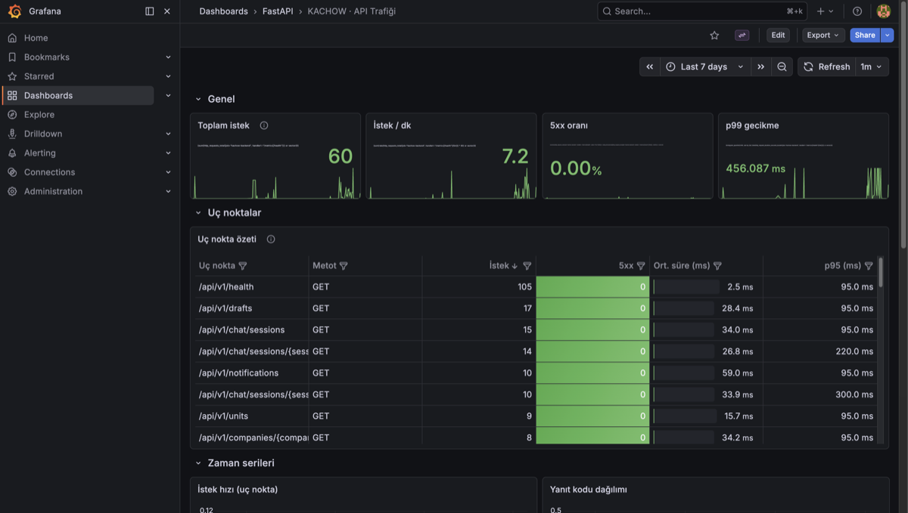
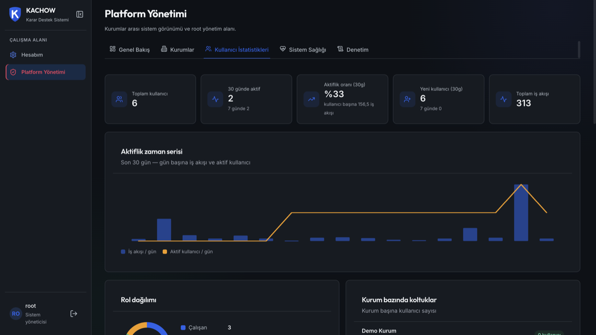

ayrı el değiştirme
Sınıflandırma, mevzuat, taslak, kontrol, paraf, yönlendirme — her adım farklı masada.
KACHOW; gelen resmî evrakı okur, sınıflandırır, ilgili mevzuatı bulur, resmî cevabı yazar, her cümlesini kaynağıyla doğrular ve doğru birime yönlendirir. Tekrarı otomatikleştirir — kararı asla insandan almaz.
Kamu kurumunda gelen tek bir yazının işlenmesi; okumak, türünü anlamak, eksikleri kovalamak, mevzuatı taramak, cevabı yazmak, kontrol etmek ve doğru birime iletmek demektir. Bu zincir elle döndükçe yavaşlar, tutarsızlaşır ve iz bırakmaz.
Sınıflandırma, mevzuat, taslak, kontrol, paraf, yönlendirme — her adım farklı masada.
Şablon aramak, önceki yazıları taramak ve mevzuat maddesi bulmak zamanın çoğunu alır.
Kaynakta olmayan bir tarih, yanlış muhatap veya eksik alan çoğu zaman geç fark edilir.
Yönlendirme çoğu sistemde gerekçesiz bir birim adıdır; itiraz edilemez, denetlenemez.
KACHOW bu adımların hepsini birbirine bağlı ajanlar olarak çalıştırır. Akış canlı izlenir; kritik bir nokta çıkarsa durur ve insan onayını bekler.
Akış sunucuda tutulur — sayfa yenilense bile bekleyen onay kaybolmaz.
Girişten imzaya kadar tek platform: dashboard, evrak analizi, mevzuat haritası, çok-ajanlı taslak akışı, insan onay kapısı, denetim ve gözlemlenebilirlik.










İncelemek için tıklayın
Belge okunur, türü ve temel alanları (tarih, sayı, konu, muhatap, gönderen) yapılandırılmış olarak çıkarılır, eksikler işaretlenir.
İlgili mevzuat hibrit aramayla bulunur, yazışma türü belirlenir ve kurumun üslubuna uygun resmî taslak üretilir.
Taslaktaki her tarih, tutar, kişi ve mevzuat atıfı kaynak evrakla karşılaştırılır; uygun birim gerekçesiyle önerilir; kritik durumda insana devredilir.
Taslakta geçen 15.03.2026 tarihi kaynak evrakta bulunamadı. Onayınıza sunuluyor — düzeltin, onaylayın veya reddedin.
Bu, gerçek arayüzün sadeleştirilmiş bir temsilidir. Her adım sunucudan canlı olarak akar (SSE).
Eksik bilgi, olası halüsinasyon veya kritik tutarsızlıkta akış durur. Onay sunucuda saklanır; sayfa yenilense bile kaybolmaz, aynı noktadan devam eder.
Yerel modda tüm modeller kapalı ağda (Ollama) çalışır. PostgreSQL Row-Level Security ile kurumlar veritabanı seviyesinde birbirinden izole edilir.
Taslaktaki her tarih, sayı, tutar, kişi, kurum ve mevzuat atfı kaynak belgeyle karşılaştırılır. Yüksek genel skor, ciddi bir kaynak hatasını gizleyemez.
Geri bildirimlerden tercih çiftleri çıkarılır, kuruma özel stil kuralları üretilir. Yeterli veride opsiyonel LoRA/DPO ile daha da kişiselleşir.
Sonuç sadece bir birim adı değil: önerilen birim, güven skoru, yönlendirme gerekçesi ve alternatif birimler birlikte döner.
Aynı iş akışı hem yerel donanımda hem TEKNOFEST Evren altyapısında çalışır. Sağlayıcı değişir, domain kodu değişmez.
Aşağıdaki rakamlar tek bir "başarı puanı" değil; belge anlama, bilgiye erişim, taslak kalitesi, güvenlik ve performans için ayrı benchmark'lardan gelir.
Her kurumun kullanıcıları, evrakları, taslakları ve stil profili ayrıdır. İzolasyon yalnızca uygulama kodunda değil, PostgreSQL RLS ile veritabanı seviyesinde uygulanır.
ROOT / ADMIN / MANAGER / EMPLOYEE rolleri; ayrıca sahiplik, kurum üyeliği, gizlilik seviyesi ve özel izinler her istekte birlikte değerlendirilir (zero-trust).
Girişte prompt-injection temizliği, PII tespiti ve hassasiyet kontrolü. Çıkışta prompt sızıntısı, kişisel veri ve kaynak dışı iddia kontrolü. TCKN/IBAN'da checksum doğrulaması.
Her isteğe korelasyon kimliği atanır ve audit kayıtlarına taşınır. Prometheus, Grafana, Jaeger ve Langfuse ile metrik, trace ve LLM maliyeti izlenir.
Modüler monolit backend · LangGraph checkpoint'li durum makinesi · SSE ile canlı olay akışı · 15 servislik geliştirme topolojisi · Apache 2.0 lisansı.
KACHOW tek bir kurum için değil, kamunun tamamı için tasarlandı. Tekrar eden işi ajanlara, kararı ise her zaman insana bırakır. Sonuç: daha hızlı yanıt, daha az sessiz hata, tam denetlenebilir bir süreç ve kurum hafızasına dönüşen bir üslup.
KACHOW · TEKNOFEST 2026 · Karar Destek Sistemi